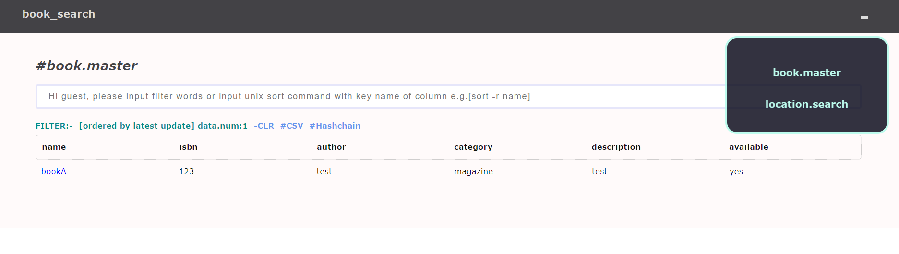
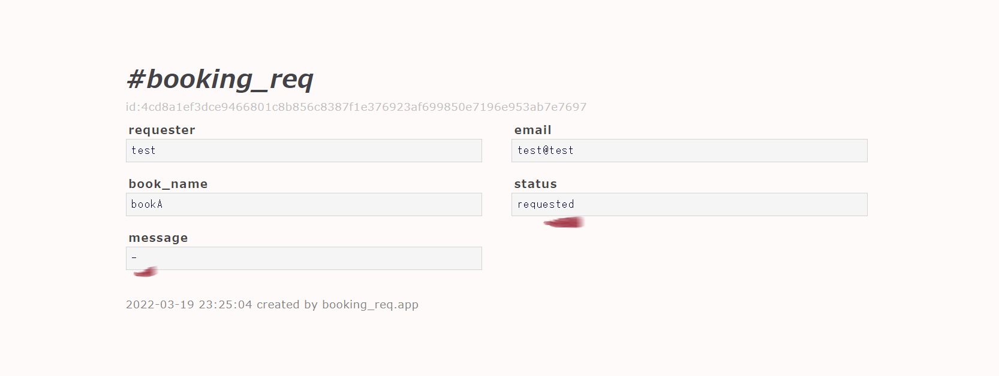
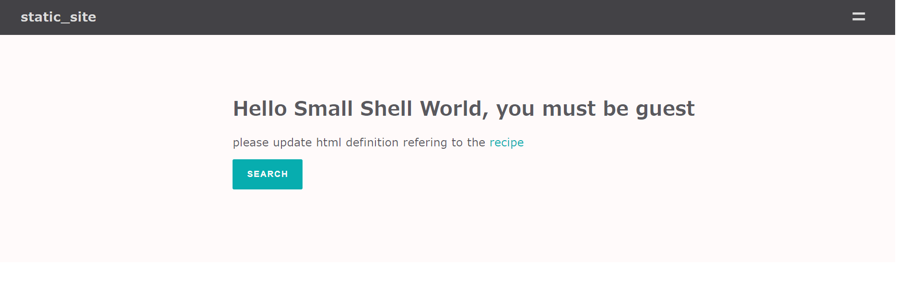
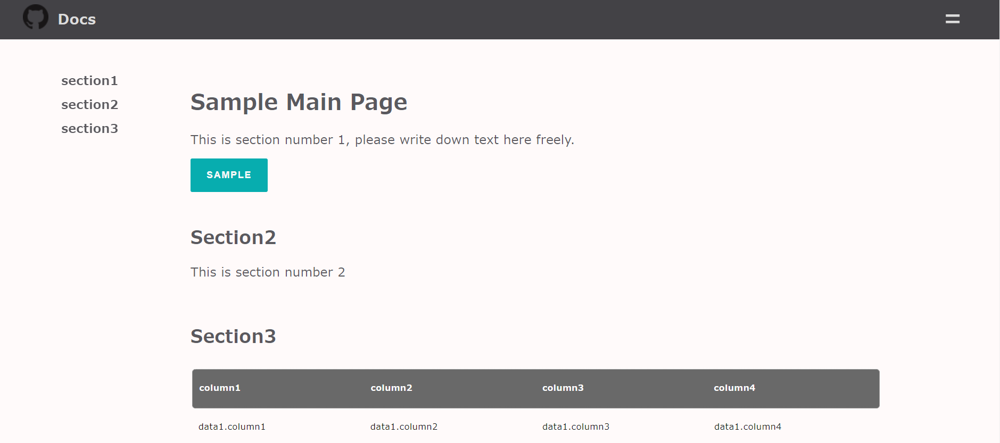

Cook book
In this course, we would like to show how you can utilize APPs { Base APP, Scratch APP, Form } and we would like to also share the recipe of design change of HTML/CSS descriptor.
Cook prototype APP
In this protoype scinario we would like to cook library booking APP. Base APP will be used for data management of admin, Scrath APP will be used for data search for end user and Form will be used for request form.
APP
APP for admin = Base APP
APP for user = book_search, req.form
Databox
Databoxes are created as following. book.master will be master data of book information, book.res is resource information including location information each resource, and request.db is databox for request from end user.
book.master <-- book.res #res=resource <-- request.db
Let's start to generate databox
Create databox
sudo -u small-shell /usr/local/small-shell/gen -databox
1. book.master { name: text, isbn: num, author: text, category: select, desciption: textarea, available: checkbox}
2. book.res { hashid, name: pdls(book.master), location: select, status: select }
3. request.db { hashid, requester: text, email: email, book_name: text, status: select, book_resource: pdls(book.res), message: textarea }
Please check the sample definition db.def
Launch Base APP
Let's launch Base APP by refering to Quick start
sudo /usr/local/small-shell/adm/gen -app
Type of APP (1.BASE | 2.FORM | 3.SCRATCH): 1
#-> Dialog will be started, for making Base APP
Add data by using Base APP
For managing datas, let's use Base APP.
STEP1 Add master data to book.master
STEP2 Add resource data to bookk.res that will be linked to master data
Create scratch APP
Once databoxes and Base APP is created, let's create APPs
Create Main APP
Let's execute gen -app to create book_search APP, then access URL will be shown.
sudo /usr/local/small-shell/adm/gen -app
Type of APP (1.BASE | 2.FORM | 3.SCRATCH): 3
app_name: book_search
Type of Authentication (1.shared pass | 2.user key | 3.other | 4.none): 4
primary databox: book.master
Add sub APP
Once main APP is created, let's add table to the APP using sub APP. this sub APP is used for searching book resource and location.
sudo /usr/local/small-shell/adm/gen -app
Type of APP (1.BASE | 2.FORM | 3.SCRATCH): 3
app_name: location@book_search
Type of Authentication (1.shared pass | 2.user key | 3.Other | 4.None): 4
primary databox: book.res
Add routing
sudo vi /usr/lib/cgi-bin/book_search
--code--
# add routing
"location.table") ../bin/location_table.sh session:$session pin:$pin user_name:$user_name page:$page table_command:$table_command;;
"location.get") ../bin/location_get.sh session:$session pin:$pin user_name:$user_name id:$id;;
"location.set") ../bin/location_set.sh session:$session pin:$pin user_name:$user_name id:$id;;
"location.del") ../bin/location_del.sh session:$session pin:$pin user_name:$user_name id:$id;;
"location.log_viewer") ../bin/location_log_viewer.sh session:$session pin:$pin id:$id;;
"location.file") ../bin/location_dl.sh session:$session pin:$pin id:$id;;
--------
Generate meta link
meta links can be generated for each APPs. and let's cook it as next step.
# generate link
sudo -u small-shell /usr/local/small-shell/bin/meta get.link:book_search
sudo -u small-shell /usr/local/small-shell/bin/meta get.link:location@book_search
Cook APP
update portal
Portal could be used for some description of the APP, lets modify descpription section.
sudo vi /var/www/descriptor/book_search_main.html.def
# -> update HTML
--code--
<div class="main">
<div class="description">
<h1>Welcome to book_search APP. please search book and request for lending.</h1>
<pre>
STEP1: search book from table
STEP2: request from book page, then you can get your request link
STEP3: message will be update by admin, then you can get book
</pre>
<br></br>
<a href="./book_search?%%params&req=table"><button class="button">Search</button></a>
</div>
</div>
--------

update menu
For better UI, let's add meta link to the menu
sudo vi /var/www/descriptor/common_parts/book_search_common_menu
--code--
<li><a href="./book_search?%%session&req=table">book.master</a></li>
<li><a href="./book_search?%%session&subapp=location&req=table">location.search</a></li>
--------

Add logics to the APP
In this example, we are adding following functions to book_search APP
- Add link from master data to resource table
- Filter table to show only available data
- Restrict key
- Add link from resource data to master data
Add link from master data to resource table
sudo vi /var/www/descriptor/book_search_get_ro.html.def
--code--
<div class="action_links">
<span><a href="./book_search?%%session&subapp=location&req=table&table_command=%%book_name"><p>location table</p></a></span>
</div>
--------
To insert %%book_name, let's add these logics to get action.
sudo vi /var/www/bin/book_search_get.sh
# block1 { get ID book_namd }
--code--
book_name=`$DATA_SHELL databox:book.res action:get key:name id:$id format:none | awk -F ":" '{print $2}'`
--------
# block2 { update sed logic to insert book_name }
--code--
cat ../descriptor/${view} | sed "s/^ *</</g" \
| sed "/%%common_menu/r ../descriptor/common_parts/book_adm_common_menu" \
| sed "/%%common_menu/d" \
| sed "/%%dataset/r ../tmp/$session/dataset" \
| sed "s/%%dataset//g"\
| sed "/%%history/r ../tmp/$session/history" \
| sed "s/%%history//g"\
| sed "s/%%id/$id/g" \
| sed "s/%%book_name/$book_name/g" \
| sed "s/%%pdls/session=$session\&pin=$pin\&req=get/g" \
| sed "s/%%session/session=$session\&pin=$pin/g" \
| sed "s/%%params/session=$session\&pin=$pin/g"
--------

Filter table to show only available data
To filter the master table only available data, let's add match option.
sudo vi /var/www/bin/book_search_table.sh
# e.g.) $DATA_SHELL databox:$databox command:show_all[line=$line_start-$line_end][keys=$keys][filter=${filter_table}][match=available{yes}]
To filter the location table only on the shelve, let's add match option. by the way {%%%%%%%} is meta charactor of small shell. it will be translated to _, I mean on{%%%%%%%}the{%%%%%%%}shelve} will be translated to on_the_shelve.
sudo vi /var/www/bin/location_table.sh
# e.g. ) $DATA_SHELL databox:$databox command:show_all[line=$line_start-$line_end][keys=$keys][filter=${filter_table}][match=status{on{%%%%%%%}the{%%%%%%%}shelve}]
Restrict key
To restrict accessable key, please change all to specific keys.
sudo vi /var/www/bin/location_get.sh
# -> change keys from all to specific keys.
keys=hashid,name,location
sudo vi /var/www/bin/location_table.sh
# -> change keys from all to specific keys.
keys=hashid,name,location
Add link from resource data to master data
sudo vi /var/www/descriptor/location_get_ro.html.def
--code--
<div class="action_links">
<span><a href="./book_search?%%session&req=get&id=%%book_id"><p>Master data</p></a></span>
</div>
--------
To insert %%book_id, let's modify render logics to get action.
sudo vi /var/www/bin/location_get.sh
--code--
# render HTML
resource_id=$id
book_name=`$DATA_SHELL databox:book.res action:get key:name id:$id format:none | awk -F ":" '{print $2}'`
book_id=`$DATA_SHELL databox:book.master command:show_all[match=name{$book_name}] format:json | jq '.[] | .id'| sed -s "s/\"//g"`
cat ../descriptor/${view} | sed "s/^ *</</g" \
| sed "/%%common_menu/r ../descriptor/common_parts/book_search_common_menu" \
| sed "/%%common_menu/d" \
| sed "/%%dataset/r ../tmp/$session/dataset" \
| sed "s/%%dataset//g"\
| sed "/%%history/r ../tmp/$session/history" \
| sed "s/%%history//g"\
| sed "s/%%id/$id/g" \
| sed "s/%%book_id/$book_id/g" \
| sed "s/%%pdls/session=$session\&pin=$pin\&req=get/g" \
| sed "s/%%session/session=$session\&pin=$pin/g" \
| sed "s/%%params/subapp=location\&session=$session\&pin=$pin/g"
--------

Generate form
Let's generate form for requesting book.
sudo /usr/local/small-shell/adm/gen -app
Type of APP (1.BASE | 2.FORM | 3.SCRATCH): 2
result of dialog
APP type: 2.FORM
Form name: booking_req
target_databox: request.db
description: This is request form for booking library
IP_whitelisting: no
Included keys: requester,email,book_name
Access URL: https://**-**-**/cgi-bin/booking_req
Cook Form
Once Form APP is generated, let's cook the codes.
- Insert book name using QUERY STRING
- Booking 1 resource which is available and searchable in book.master
- Change status of other databoxes, #book.master #book.res
update controller
sudo vi /usr/lib/cgi-bin/booking_req
org: ../bin/booking_req_get.sh session:$session pin:$pin id:$id remote_addr:${remote_addr};;
update : ../bin/booking_req_get.sh session:$session pin:$pin id:$id remote_addr:${remote_addr} book_name:${book_name} ;;
update get logic for loading QUERY STRING
sudo vi /var/www/bin/booking_req_get.sh
# block1, load book_name from controller
--code--
if [[ $param == book_name:* ]]; then
book_name=`echo $param | awk -F":" '{print $2}'`
fi
--------
# bock2, add book_name to new form.
--code--
# gen reqd/write form #new
$DATA_SHELL databox:request.db action:get id:$id keys:requester,email,book_name format:html_tag > ../tmp/$session/dataset.0.1
cat ../tmp/$session/dataset.0.1 \
| sed "s/name=\"book_name\" value=\"\"/name=\"book_name\" value=\"$book_name\"/g" > ../tmp/$session/dataset
--------
update $app_set.sh for updating datasets additionally
sudo vi /var/www/bin/booking_req_set.sh
--code--
# load book resource
book_name=`cat ../tmp/$session/book_name`
resource_id=`$DATA_SHELL databox:book.res command:show_all[match=name{$book_name}][filter=status{on{%%%%%%%}the{%%%%%%%}shelve}] format:json \
| jq '.[] | .id'| sed -s "s/\"//g" | head -1`
if [ "$resource_id" ];then
# push datas to databox
echo "$resource_id" > ../tmp/$session/book_resource_id
echo "requested" > ../tmp/$session/status
keys="book_resource_id,status,$keys"
$DATA_SHELL databox:request.db action:set id:new keys:$keys input_dir:../tmp/$session > ../tmp/$session/result
# result check
updated_id=`cat ../tmp/$session/result | grep "^successfully set" | awk -F "id:" '{print $2}' | sed '/^$/d' | sort | uniq`
avail_num=`$DATA_SHELL databox:book.res command:show_all[match=name{$book_name}][filter=status{on{%%%%%%%}the{%%%%%%%}shelve}] format:none | wc -l`
if [ "$updated_id" -a $avail_num -ge 1 ];then
# update staus of resource.db
$DATA_SHELL databox:book.res action:set id:$resource_id key:status value:reserved >> ../tmp/$session/result
# update status of book.master
(( avail_num -= 1 ))
if [ $avail_num -eq 0 ];then
book_master_id=`$DATA_SHELL databox:book.master command:show_all[match=name{$book_name}] format:json | jq '.[] | .id'| sed -s "s/\"//g"`
$DATA_SHELL databox:book.master action:set id:$book_master_id key:available value:- >> ../tmp/$session/result
fi
fi
fi
-------
Add reserve button for book_search APP
sudo vi /var/www/descriptor/book_search_get_ro.html.def
--code--
<a href="./booking_req?book_name=%%book_name"><button class="button">Reserve</button></a>
--------

Check QUERY STRING is working
Once you click Reserve button, request form must contain book information

Finalize
Add status and message to end user page
sudo vi /var/www/bin/booking_req_get.sh
--code--
# gen read only datas
$DATA_SHELL databox:request.db action:get id:$id keys:requester,email,book_name,status,message format:none | grep -v hashid > ../tmp/$session/dataset.0.1
cat ../tmp/$session/dataset.0.1 | sed "s/^/<li><label>/g" | sed "s/:/<\/label><pre>/g" | sed "s/$/<\/pre><\/li>/g" \
| sed "s/<pre><\/pre>/<pre>-<\/pre>/g" | sed "s/_%%enter_/\n/g" > ../tmp/$session/dataset
--------

Publish cook book as a template
You can publish your APP template with copying bin/${APP} and cgi-bin/${APP} descriptor/${APP}*. If you add deploy.sh as well to the repository, other user can import APP very easily.
cd $HOME
git clone https://github.com/21it-org/21it/templates
cd cookbook
sudo ./deploy.sh
This is sample code of deploy.sh
Published sample code
please check it ! cookbook on github
Cook Job
Let's create job for updating available status. this job can prevent miss to update available status even if admin return book to shelve and update book resource status.
Create batch script
You can use small-shell basic parameters and sys user key if you add script to util/scripts dir.
sudo vi /usr/local/small-shell/util/scripts/status_update.sh
#!/bin/bash
#-------------------------------------------------------------
# This is the script for update status of book.master
#-------------------------------------------------------------
# global.conf load
SCRIPT_DIR=`dirname $0`
. ${SCRIPT_DIR}/../../global.conf
# load authkey
. ${SCRIPT_DIR}/.authkey
WHOAMI=`whoami`
if [ ! "$WHOAMI" = "small-shell" ];then
echo "error: user must be small-shell"
exit 1
fi
# dump non available books
$ROOT/bin/DATA_shell authkey:$authkey databox:book.master command:show_all[keys=id,name][match=available{-}] format:csv \
> ${SCRIPT_DIR}/tmp/book_master_dump.tmp
# check latest resource status
count=1
while read line
do
if [ $count -gt 1 ];then
book_id=`echo $line | awk -F "," '{print $1}'`
book_name=`echo $line | awk -F "," '{print $2}'`
# check on_the_shelve book
check_shelv=`$ROOT/bin/DATA_shell authkey:$authkey databox:book.res \
command:show_all[match=name{$book_name}][filter=status{on{%%%%%%%}the{%%%%%%%}shelve}] format:none`
if [ "$check_shelv" ];then
# update available status
$ROOT/bin/DATA_shell authkey:$authkey databox:book.master action:set id:$book_id key:available value:yes
echo "$ROOT/bin/DATA_shell authkey:$authkey databox:book.master action:set id:$book_id key:available value:yes"
fi
fi
((count += 1))
done < ${SCRIPT_DIR}/tmp/book_master_dump.tmp
exit 0
Change system user permission from read only to read/write
Before executing the job, please change sys user permission from ro to rw.
sudo /usr/local/small-shell/adm/ops set.attr:sys{rw}
Push job to small shell
You can put job to small shell automation framework very easily. please check detail at e-cron tour.
sudo /usr/local/small-shell/adm/gen -job
Dialog will be started.
job name: book_master_status_update
Type of job (1.job automation | 2.file exchange) : 1
--Define schedule--
Month [ any | 1-12 ]: any
Date [ any | 1-31 ]: any
Hour [ any | 0-23 ]: any
Min [ any | 0-59 ]: 0
Week [ any | mon - sun ]: any
Exec command or batch script: status_update.sh
Enable job
sudo -u small-shell /usr/local/small-shell/bin/e-cron enable.book_master_status_update
Job check
# check list
sudo -u small-shell ./e-cron ls
--------------------------------------------------------------
job definition: /usr/local/small-shell/util/e-cron/def
--------------------------------------------------------------
book_master_status_update.enabled
del_session.enabled
del_util_log.enabled
# exec manually
sudo -u small-shell ./e-cron exec.book_master_status_update
book_master_status_update successfully completed
# check status
sudo -u small-shell ./e-cron stat
--------------------------------------------------------
LATEST STATUS OF JOB
--------------------------------------------------------
2022-03-20 00:05:01 del_util_log successfully completed
2022-03-20 02:45:41 book_master_status_update successfully completed
2022-03-20 02:46:01 del_session successfully completed
HTML/CSS design recipe
In this section, you can learn how you can change design of main page of your APP. let's create main page with no authentication and no databox for making the easiest example.
sudo /usr/local/small-shell/adm/gen -app
Type of APP (1.BASE | 2.FORM | 3.SCRATCH): 3
app_name: static_site
Type of Authentication (1.shared pass | 2.user key | 3.other | 4.none): 4
primary databox: none
Then default page will be generated like this. 
Cook main page
Let's move on to cook main page,
sudo vi /var/www/descriptor/static_site_main.html.def
Note
Please update under "main" class, then you can use light css framework
Update left header
You can modify links and logo to the left header, in this example link to Docs is added.
<div class="left-header">
<a href="https://github.com"><img src="../GitHub-Mark-32px.png"></a>
<a href="https://small-shell.org"><h2>Docs</h2></a>
</div>
Implement flex-table
For implementing table, you must use some classes. table must be contain "flext-table" class. and header should have "flex-table-header" class.
<div class="flex-table">
<ul>
<li class="flex-table-header">
<p>column1</p>
<p>column2</p>
<p>column3</p>
<p>column4</p>
</li>
<li>
<p>data1.column1</p>
<p>data1.column2</p>
<p>data1.column3</p>
<p>data1.column4</p>
</li>
</ul>
</div>
Add internal page link to the left navi
In this example, page will have 3 section including table section.
<div class="left-nav">
<a href="#section1"><p>section1</p></a>
<a href="#section2"><p>section2</p></a>
<a href="#section3><p>section3p></a>
</div>
Use button
Button must have "button" class.
<button class="button">Sample button</button>
Use image
In this example, we would like to use GitHub logo for image. please upload logo to "/var/www/html" dir if you are using ubuntu&apache2. then write down the path to the HTML page.
<a href="https://github.com"><img src="../GitHub-Mark-32px.png"></a>
Update even menu
In this example, links in right header menu will be external links and mail addr.
sudo vi /var/www/descriptor/common_parts/static_site_common_menu
<li><a href="">LINK 1</a></li>
<li><a href="">LINK 2</a></li>
<li><a href="mailto:address">MAIL</a></li>
Add footer
Please use footer class for making footer.
<div class="footer">
<p>powered by small-shell.org</p>
</div>
completed image
Please see the entire sample code here sample,

Change color
You can change color by updating $app.css.def
sudo vi /var/www/descriptor/static_site.css.def
#----------------classes---------------#
# Change header color
.flex-header
# Change right menu charactor
.right-header a
# Change right menu background and border color
.right-header nav
.right-header nav.open-menu
# Change right header button (=)
.right-header .even-btn-menu
# Change button
.main button
# Change table header of main
.main .table-header
#----------------------------------------#
Distribute the site to static directory
You can export main page as static stie. then please copy the html to /var/www/html or other static directory.
/usr/local/small-shell/util/scripts/dist.sh $APP $EXPORT_DIR
apache2 log analyzer
You can import job for analyzing apache2 log from github. please deploy it to the web server that has apache2 log. by the way, this job is designed for Ubuntu apache2 server. if you want to use this for other platform, please modify log_analyzer.sh
Link to code is here
cd $HOME
git clone https://github.com/naruoken/small-shell-apps
cd small-shell-apps/apache2_analyzer
# Deploy job
sudo ./deploy.sh
confirm imported job
If deploy.sh executed without any error, 1 databox {apache2_analyer} and 3 job will be imported.
log analyzer
sudo -u small-shell /usr/local/small-shell/bin/e-cron cat.log_analyzer
> JOB: log_analyzer
def:/usr/local/small-shell/util/e-cron/def/log_analyzer.def
-------------SCHEDULE----------------
min: 1
hour: 0
date: any
month: any
week: any
-------------DEFINITION----------------
exec_command="/usr/local/small-shell/util/scripts/apache2_log_analyzer.sh 21it"
input_message=""
output_message="analyzer.done"
hubapi=""
api_authkey=""
page view
sudo -u small-shell /usr/local/small-shell/bin/e-cron cat.pv_statistics
> JOB: pv_statistics
def:/usr/local/small-shell/util/e-cron/def/pv_statistics.def
-------------SCHEDULE----------------
min: 0
hour: 1
date: any
month: any
week: any
-------------DEFINITION----------------
exec_command="/usr/local/small-shell/util/scripts/sumup.sh type:line sumup_key:pv frequency:daily title:pv set_time:\"`date +%Y-%m-%d --date '1 day ago'`\" global_filter:\"`date +%Y-%m-%d --date '1 day ago'`\" databox:apache2_analyzer"
input_message="analyzer.done"
output_message="pv.done"
hubapi=""
api_authkey=""
Uniq access
sudo -u small-shell /usr/local/small-shell/bin/e-cron cat.uniq_statistics
> JOB: uniq_statistics
def:/usr/local/small-shell/util/e-cron/def/uniq_statistics.def
-------------SCHEDULE----------------
min: 10
hour: 1
date: any
month: any
week: any
-------------DEFINITION----------------
exec_command="/usr/local/small-shell/util/scripts/sumup.sh type:line sumup_key:uniq_access frequency:daily title:pv set_time:\"`date +%Y-%m-%d --date '1 day ago'`\" global_filter:\"`date +%Y-%m-%d --date '1 day ago'`\" databox:apache2_analyzer"
input_message="pv.done"
output_message=""
hubapi=""
api_authkey=""
Confirm result
Job will push the result to the databox named as apache2_annalyzer. Log analytics target is access.log.1 it means 1 day ago log. you can check the graph on console. using #stats command.